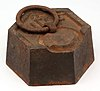

mass
property

Source: Wikipedia
Wikipedia Page (Something wrong with this association? Let us know.)
Wikidata Page (Something wrong with this association? Let us know.)
Occurs in:
- model_simulation_crop_production__mass
- observation_crop_nitrogen-fertilizer_application__mass
- atmosphere_hydrometeor__mass
- automobile__mass
- river-delta__mass
- earth__mass
- glacier_ice__change_from_one-year_min_of_mass
- glacier_ice__mass
- glacier_ice__time_derivative_of_mass
- projectile__mass
- crop_biomass~microbial-and-soil_decomposition_carbon_respiration__mass
- soil_carbon_pool~stabilized_carbon__one-year_change_of_mass
- soil_carbon_pool~stabilized_carbon__change_of_mass
- above-ground_crop_residue-as-carbon_decomposition__mass
- above-ground_crop_roots-and-rhizodeposits-as-carbon_decomposition__mass
- soil_pool~stabilized_carbon__change_of_mass
- soil_pool-and-pool~microbial_carbon~decomposed_addition__mass
- land_fertilizer_application__mass